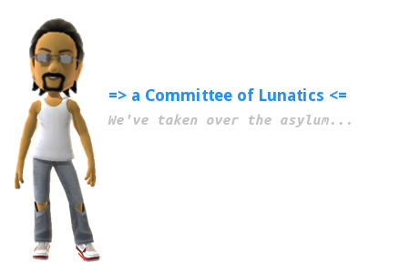

kowm-apps
kowm-apps ( /kōm-æps/ ) are, collectively, any apps written using the kowm libraries; these are usually intended to be optionally included with any working kowm-desktop if a user so desires. These will reside within the kowm-apps project. kowm-apps can use any language for which exists a language binding or a new one if you or a friend have the knowledge to write one; don't fret too much, it's not a difficult task. That being said, we definitely are expecting the first few to be all Ruby.
click here to go back to a Committee of Lunatics
click here to go back to the main project page
All site contents, unless otherwise stated, are copyright © 2009-2013, Jerry W Jackson - all rights reserved.


click here to go back to the main project page
All site contents, unless otherwise stated, are copyright © 2009-2013, Jerry W Jackson - all rights reserved.